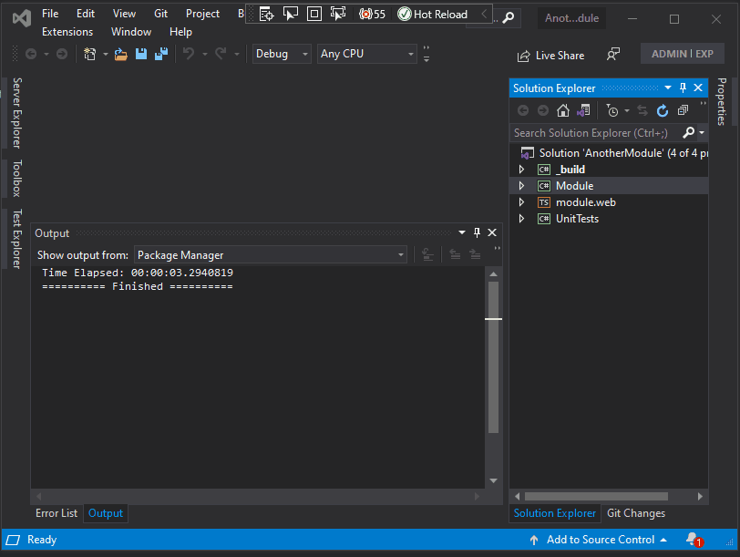
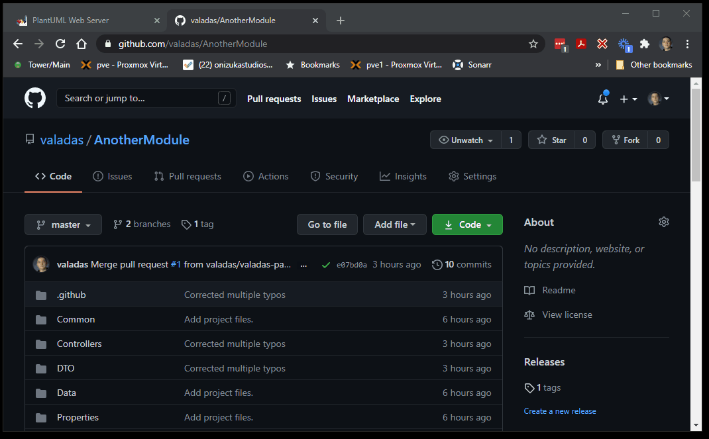
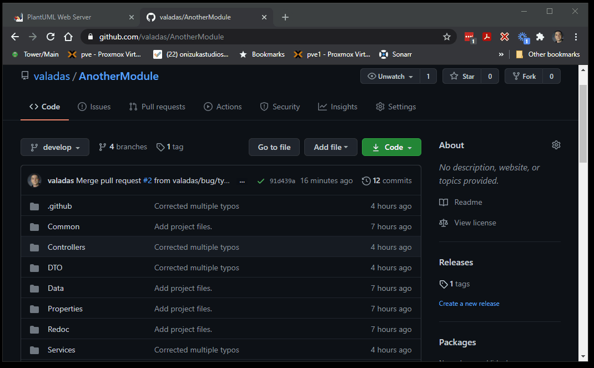

Git support
To gain the full benefits of this module template it is recommended to set it up as a git repository and to push it to Github.
Note
Git and Github are 2 different things. Git is a version control system that works locally and supports having remotes. Github is one of these possible remotes.
Create a git repository
Tip
You can do the next steps using any git client (even the command line), however in this tutorial we'll be using Github Extensions for VisualStudio. If you did not select this option when you installed VisualStudio you can download this extension at the link above.
Commit your module to Github by clicking the Add to Source Controlbutton in the lower right corner of VisualStudio and complete the wizard that opens.
Note
You may be asked to login if it's the first time you are using Github integration in Visual Studio. If you are asked to login, it is recommended to create a Personal Access Token instead of using your login/password. Also the Github automations support both private and public repositories. 
Automated releases
In a few minutes if you navigate to your repository on Github, you will notice there is a draft release for v0.1.0. It has no release notes yet but it does have the fully packaged module ready for production install.
Tip
This is a draft an the public won't see it as an available release yet. Since this is probably not ready for production, you can delete the release and the tag if you don't want to keep it (and reserve the v0.1.0 version from future use). If you do want to keep it, you can edit it and publish it. Each push to the main or master branch will trigger a draf release that is non-beta, this is how we will do releases in the future.
Automatic Versioning
The template uses GitVersion and the GitFlow branching strategy in order to manage versions and releases.
This means:
- The main or master branch contains the code from the latest published production release. Only merge commits comming from a
releaseorhotfixbranch should be merged to it. Each push to this branch will produce a draft release. - The develop branch contains the latest development code (alpha). Merging or pushing to this branch does not produce any release but you can get the (alpha) build from the branch build status badge. Also any pull request to it builds the project and you also have the PR build artifact available in the action status.
- release branches are used to prepare the next release, when a
release/1.0.0branch is created, a few minutes after, you will have an unpublished release calledv1.0.0-beta-1. For each further merge or push to therelease/1.0.0branch, you will get the same version but a new beta sequential member likev1.0.0-beta-2. When the release is ready for production, you can merge therelease/1.0.0into themainormasterbranch (usually through a pull request) and it will produce a draft release called v1.0.0 (no longer beta).
Tip
By default when you initially pushed the first commit to github earlier, it created only the main or master branch. You should on github create a develop branch from it and then pull that branch before any further development.
Automatic Release Notes
Release notes for each of those versions are automatically generated from Pull Request (PR) titles for which the milestone matches the released version. The notes are also grouped by label.
Mergeable
Mergeable is a Github extension that enforces some rules over pull requests and/or issues. It is pre-configured in this template to enforce that every pull request has a title, description, label and milestone.
Dependabot
Dependabot is also pre-setup, it will look at the project dependencies and create automated pull requests when it detects a new version of those dependencies.
Tip
Although Dependabot is very useful in warning you about new versions of dependencies and automatically running a built, you should inspect each of those PRs to make sure you do want to accept them. For instance, this template uses Entity Framework and this dll is distributed with the module package. However it's version needs to be declared in the dnn manifest and dependabot is not aware of this. Also, Dnn has some dependencies like Newtonsoft.Json and if you used a different version than Dnn, you may run into some issues which will be hard to catch by unit tests.
Trying it out
- Let's make sure we have a develop branch on github and we pull it locally. To do this, we will create the develop branch on github and set it as our default branch. At the same time while we are there, we can setup some branch protection rules to prevent merging PRs that don't build or fail tests, etc. Then we will locally fetch and then pull that branch. 
- Now let's create a new local branch to make a small change that we will then submit as a pull request for. We will push that branch and create a pull request for it on github. Creating a pull request will fire up a build and fire up a set of tests too to validate the change does not break anything. When the build suceeds, we will merge that pull request.

- Now we will create a 1.0.0-beta release simply by creating a release/1.0.0 branch (it will take a few minutes to create the release). Note that this time because we had a PR with a milestone, we get automatic release notes generated for us. 
- Now let's assume this beta got properly tested and we want to produce the final the final 1.0.0 release, we simply need to merge the
release/1.0.0branch into ourmainormasterbranch, we will do so using a pull request and we'll do amerge commit.
Documentation
This template has both support for writing your own documentation and also automating documentation from code comments automatically to keep documentation in always in sync with the code.
Github allows having a free documentation website as part of every repository. You may not have realized it yet but it's already done as part of our initial commit.
We simply have to return to github repository settings and set the source for that site. The code can be a folder on any branch or a special branch. Here we will select the docs folder on the branch of our choice.
Tip
Selecting the main or master branch will mean that your published documentation will always be in sync with the latest published official release (non-beta). If you want your documentation to be in sync with the latest changes, you can select the develop branch or if you have long standing betas and you want the documentation to reflect it, you can select a release/x.x.x branch.
Warning
Do not select a theme in the settings, this is for Jekyll sites which we are not using. Also, it may take Github a few minutes to publish your site.

What you are seeing in Visual Studio now is only some snippets to get you started until the full documentation is published, now that this is done, you can view the full documentation at https://valadas.github.io/SummitApiDemo